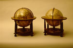

a. Aardglobe. [Geen titel. Opdracht:] Nobliss[im]is amplissimis, clarissimis
D.D. Dominis Ordinibus Foederatarum Inferioris Germaniae Provinciarum; fidis patriae
patribus hoc terrae marisq[ue] portatile theatrum, L.M.Q. dat, dicat, dedicat, cliens
vester subiectiss[imus] Guilielmus Ianssonius Blaeu. [Schaal circa 1:37.500.000.]
Kopergravure, gekleurd. Diameter 340 mm. Geplaatst op een houten stoel met meridiaanring.
Uurring met wijzer ontbreekt. [Amsterdam, na 1621.] -- (Museum Boerhaave)
b. Hemelglobe. Sphaera stellifera in qua ut speculo quodam firmamenti, universum
siideru[m] ornatum ac stellarum ordinem summa, qua fieri potuit industria a Guilielmo
Ianssonio, magni Tychonis quondam discipulo, accuratiss[im]e dispositum [...] a[nn]o 1603.
Kopergravure, gekleurd. Diameter 340 mm. Geplaatst op een houten stoel met meridiaanring.
Uurring met wijzer ontbreekt. [Amsterdam, na 1621.] -- (Museum Boerhaave)
Onder invloed van de economische expansie aan het einde van de zestiende eeuw ontstond in Nederland een grote behoefte aan geografische en astronomische kennis ten behoeve van de navigatie. Deze ontwikkeling vormde de voedingsbodem voor de opkomst van een cartografische industrie, waarin de vervaardiging van globes een belangrijke plaats innam. Deze waren immers toen het hulpmiddel bij uitstek bij het onderwijs in de geografie en de astronomie. Een instelling als de Leidse universiteit beschikte in de zeventiende eeuw over verscheidene globeparen, vervaardigd door Gerard Mercator, Jodocus Hondius en Willem Jansz Blaeu. Van deze paren is alleen het onderhavige, dat vermoedelijk aan het einde van de zeventiende eeuw werd aangekocht, bewaard gebleven. De andere globes werden op openbare veilingen verkocht of vanwege hun slechte staat opgeruimd.
Het gebruik van globes bij het onderwijs aan brede lagen van de bevolking werd vooral aangemoedigd door een aantal op initiatief van de globemakers gepubliceerde Nederlandstalige handleidingen. De eerste publicatie van deze aard, Inleydinge hoe men verstaen en gebruiken zal zoo wel den celeste als den terreste globe ofwel cloote van Nicolaus Petri Daventriensis, verscheen in 1588 als toelichting bij de globes vervaardigd door Jacob Florisz van Langren. In 1597 volgde een door Hondius bewerkte vertaling van de Tractatus de globis van Robert Hues. De grootste bekendheid echter verwierf het in 1633 door Willem Jansz Blaeu gepubliceerde leerboek Tweevoudigh onderwijs van de hemelsche en aerdsche globen, dat vele herdrukken beleefde.
De hemelglobe van na 1621 is een bewerking van de eerste hemelglobe, die door Blaeu omstreeks 1598 werd vervaardigd. Hoewel hij daarbij gebruik had kunnen maken van de meest recente waarnemingen van de beroemde Deense astronoom Tycho Brahe (wat trouwens het beeld van de sterrenhemel op de globe niet noemenswaardig beïnvloedde), werd het succes ervan ondermijnd door de min of meer gelijktijdige publicatie van een hemelglobe door zijn concurrent Hondius, die als primeur twaalf nieuwe sterrenbeelden rond de Zuidpool bracht.
Vóór die tijd was dit zuidelijke deel van de sterrenhemel zo goed als onbekend, omdat het vanuit het noordelijke halfrond niet kan worden waargenomen. Pas nadat op initiatief van de dominee-cartograaf Petrus Plancius tijdens de eerste tocht van de Hollanders naar Indië (1595-1597) de sterren rond de Zuidpool in kaart waren gebracht en door Plancius zelf in sterrenbeelden waren gegroepeerd, veranderde dat.
Om de concurrentie van Hondius het hoofd te kunnen bieden liet Blaeu tijdens een volgende reis naar de Indische archipel door zijn stadgenoot Frederik de Houtman een nieuwe, onafhankelijke reeks waarnemingen van de zuidelijke hemel maken ten behoeve van zijn hemelglobe. De nieuwe editie daarvan verscheen in 1603.
Op deze globe, en op alle latere edities daarvan, staat ook een aantal nieuwe sterren (novae) aangegeven. Een daarvan was in 1572 door Tycho Brahe ontdekt in het sterrenbeeld Cassiopeia, een andere door Blaeu zelf, in het sterrenbeeld de Zwaan. Tycho’s nieuwe ster bracht grote opwinding teweeg, omdat tot dan toe, in overeenstemming met de Aristotelische opvatting, de sterrenhemel als onveranderlijk was beschouwd. Blaeu’s ontdekking van een tweede nieuwe ster bevestigde, dat Tycho’s waarneming geen incident was geweest, hetgeen een nieuwe interpretatie van de opvattingen over de sterrenhemel noodzakelijk maakte.
Net als de hemelglobe is de getoonde aardglobe (van na 1621) de bewerking van een globe die Blaeu rond 1599 vervaardigde. Het cartografische beeld is in grote lijnen bepaald door de aan het einde van de zestiende eeuw beschikbare kennis van landen en zeeën, zoals die bij voorbeeld wordt gegeven op de wereldkaart van Petrus Plancius van 1590 en in de Itinerario van Jan Huyghen van Linschoten, die zes jaar later verscheen. De latere edities van deze aardglobe zijn niet wezenlijk anders dan de eerste, met uitzondering van de verbeterde weergave van het Zuid-Amerikaanse continent als gevolg van de reis van Willem Cornelisz Schouten en Jacob Lemaire in 1616 naar Kaap Hoorn.
In een toelichting op de globe vestigt Blaeu de aandacht op een nieuwe methode die bij de constructie gebruikt was. Het had hem, zegt hij, wel extra werk bezorgd, maar uiteindelijk was er een betrouwbaarder product gemaakt. Vooral met betrekking tot het netwerk van gebogen kompaslijnen of loxodromen, met behulp waarvan de zeeman zijn koers kon bepalen, was dat het geval. Mercator had als eerste in 1541 deze loxodromen op zijn globe aangebracht en anderen hadden hem daarin nagevolgd. Zo ook Blaeu, maar diens globe was dank zij zijn nieuwe constructie veel nauwkeuriger. Welke methode bedoeld is met de cryptische omschrijving ‘gibbum plano, planum globo commutavimus’ (we hebben de bolle vorm in een plat vlak en het platte vlak in een globe veranderd) zal nog nader moeten worden onderzocht. In ieder geval, zegt Blaeu, kan hiermee in alle delen van de wereld naast het principe van de parallelle meridiaan, nu ook dat van de windstreek gehanteerd worden.
Literatuur
- E.L. Stevenson, Terrestrial and celestial globes. Their history and construction, including a consideration of their value as aids in the study of geography and astronomy. New Haven 1921. 2 dln, vooral II, p. 18-45.
- D.J. Warner, ‘The first celestial globe by Willem Janszoon Blaeu’, in: Imago mundi, 25 (1971), p. 29-38.
- J. Keuning, Willem Jansz. Blaeu A biography and history of his work as a cartographer and publisher. Rev. and ed. by M. Donkersloot-De Vrij. Amsterdam 1973, p. 43-63.
- E. Wagner, ‘Die Erdgloben der Offizin Blaeu. Ausgaben, Varianten und kartographischer Inhalt’, in: Der Globusfreund, 25-27 (1978), p. 169-181.
- P. van der Krogt, Old globes in the Netherlands. A catalogue of terrestrial and celestial globes made prior to 1850 and preserved in Dutch collections. Utrecht 1984, Bla 10 en Bla 18 (met niet geheel correcte transcriptie van de toelichting en vertaling).
- E. Dekker, ‘Het vermeende plagiaat van Frederick de Houtman. Een episode uit de geschiedenis van de hemelkartografie’, in: Caert-thresoor, 4 (1985), p 70-76.
| vorige pagina | top pagina |